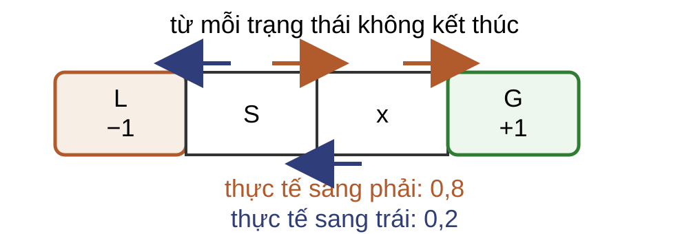
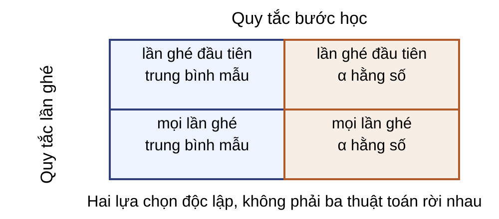
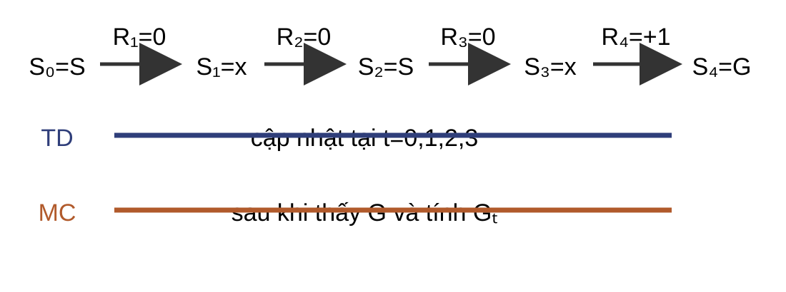
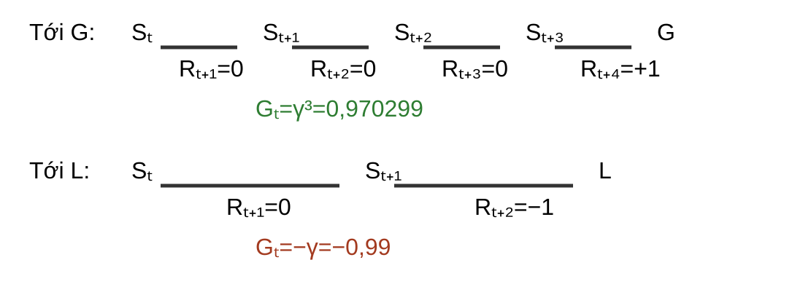

Một lượt trước công thức

Chính sách dự định đi Right; mỗi chuyển bị đảo chiều sang trái với xác suất $0{,}2$.
Lấy được lượt $e_1:S\to x\to S\to x\to G$ với thưởng chuyển $(0,0,0,+1)$.
Đích Monte Carlo là toàn bộ phần còn lại
Với lượt kết thúc tại thời điểm $T$:
$$G_t=\sum_{k=0}^{T-t-1}\gamma^kR_{t+k+1}.$$
Trong $e_1$, $\gamma=1$ nên mọi lần ghé $S$ và $x$ có $G_t=+1$.
Chỉ cập nhật sau khi đã biết điểm kết thúc của lượt.
Thuật toán MC lần ghé đầu
Đầu vào và khởi tạo
- $\pi,\gamma$; bộ sinh lượt theo $\pi$.
- Ngân sách $M$ lượt hoặc tiêu chuẩn dừng.
- $V(s)=0,N(s)=0$; $V(\text{kết thúc})=0$.
Mỗi lượt
- Sinh quỹ đạo tới kết thúc.
- Tính $G_t$ ngược từ cuối lượt.
- Với lần ghé đầu của mỗi $s$: tăng $N(s)$ và cập nhật trung bình.
Mỗi trạng thái tối đa một mẫu trong mỗi lượt.
$$N(s)\leftarrow N(s)+1,\qquad V(s)\leftarrow V(s)+\frac{G_t-V(s)}{N(s)}.$$
Đầu ra: $V$. Mỗi lượt dài $T_e$: thời gian $O(T_e)$; bảng $O(|\mathcal S|)$, quỹ đạo tạm $O(T_e)$.
Trung bình mẫu trên hai lượt
$V_0(S)=V_0(x)=0$, $\gamma=1$; mỗi trạng thái lấy mẫu ở lần ghé đầu.
| Lượt | $(G(S),G(x))$ | $(N(S),N(x))$ | $(V(S),V(x))$ |
|---|
| $e_1:S\to x\to S\to x\to G$ | $(+1,+1)$ | $(1,1)$ | $(1,1)$ |
| $e_2:S\to x\to S\to L$ | $(-1,-1)$ | $(2,2)$ | $(0,0)$ |
Hai lượt đối nghịch cho trung bình mẫu bằng $0$ ở cả S và x.
Giá trị chuẩn chỉ để đối chiếu
Giải hệ Bellman của mô hình thật cho:
$$v_\pi(S)=\frac{11}{21}\approx0{,}524,$$ $$v_\pi(x)=\frac{19}{21}\approx0{,}905.$$
Sau hai lượt: MC cho $(0,0)$. Hai giá trị chuẩn chỉ đo sai số; thuật toán không dùng chúng.
Quy tắc lấy mẫu và bước học độc lập

Giữ lần ghé đầu nhưng đổi sang $\alpha=0{,}5$: sau $e_1$ có $(0{,}5,0{,}5)$; sau $e_2$ có $(-0{,}25,-0{,}25)$.
Mọi lần ghé: cùng lượt, nhiều mẫu
Các cột sau $e_2$ tiếp tục từ giá trị đã có sau $e_1$.
| Quy tắc | S sau $e_1$ | x sau $e_1$ | S sau $e_2$ | x sau $e_2$ |
|---|
| Trung bình mẫu | $1$ | $1$ | $0$ | $1/3$ |
MC mọi lần ghé
$\alpha=0{,}5$, xử lý theo $t$ tăng dần | $0{,}75$ | $0{,}75$ | $-0{,}5625$ | $-0{,}125$ |
Các mẫu trong cùng lượt phụ thuộc nhau; thứ tự xử lý ảnh hưởng kết quả khi $\alpha$ hằng.
Khi nào trung bình mẫu hội tụ?
- Các lượt được khởi động lại độc lập và sinh theo cùng $\pi$.
- $G_t$ có kỳ vọng hữu hạn; mỗi trạng thái cần đánh giá xuất hiện trong vô hạn lượt.
- Khi đó, trung bình lần ghé đầu hội tụ về $v_\pi(s)$ theo luật số lớn.
- $\alpha$ hằng không có cùng bảo đảm hội tụ điểm; nó tiếp tục bám dữ liệu mới.
Kiểm tra cách gọi thuật toán
Câu hỏi: mô tả “Monte Carlo gia tăng” đã đủ để tái tạo kết quả chưa?
Chưa. Phải nêu lần ghé đầu hay mọi lần ghé, và $1/N$ hay $\alpha$ hằng số.
TD thay toàn bộ phần thưởng tích lũy bằng đích một bước $R_{t+1}+\gamma V_t(S_{t+1})$, nên cập nhật trước khi lượt kết thúc.
Một chuyển tiếp trước công thức
Ở thời điểm $t$, quan sát mẫu $(S_t,R_{t+1},S_{t+1})=(S,0,x)$.
Biết ngay
$R_{t+1}=0$ và ước lượng hiện tại $V_t(x)$.
Chưa biết
Phần thưởng kết thúc của lượt.
TD có thể tạo một đích học trước khi lượt kết thúc.
Đích MC, đích TD và sai số TD
| Ký hiệu | Vai trò |
|---|
| $G_t$ | Đích MC, biết sau khi lượt kết thúc |
| $Y_t^{\mathrm{TD}}$ | Đích TD một bước, dùng $V_t$ ở trạng thái kế tiếp |
| $\delta_t$ | Sai số TD: $Y_t^{\mathrm{TD}}-V_t(S_t)$ |
$v_\pi$ vẫn là đích thật; $V_t$ vẫn là bảng đang học.
Thuật toán TD(0) dạng bảng
Đầu vào và khởi tạo
- $\pi,\gamma$; bộ sinh chuyển theo $\pi$.
- Lịch bước học $\alpha_n(s)$; ngân sách hoặc tiêu chuẩn dừng.
- Khởi tạo $V$ và $n(s)=0$; đặt $V(\text{kết thúc})=0$.
Mỗi chuyển
- Chọn $A\sim\pi(\cdot\mid S)$; quan sát $R,S'$.
- Tăng $n(S)$; tính $Y=R+\gamma V(S')$ và $\delta=Y-V(S)$.
- $V(S)\leftarrow V(S)+\alpha_{n(S)}(S)\delta$; đặt $S\leftarrow S'$.
Lặp đến kết thúc rồi khởi động lượt mới. Đầu ra: $V$. Mỗi lượt dài $T_e$: $O(T_e)$ thời gian, $O(|\mathcal S|)$ bộ nhớ.
TD tuần tự trên lượt đầu
$V_0(S)=V_0(x)=0$, $\alpha=0{,}5$, $\gamma=1$.
| Chuyển | $V(S),V(x)$ trước | $Y^{\mathrm{TD}}$ | $\delta$ | sau |
|---|
| $S\to x,0$ | $(0,0)$ | $0$ | $0$ | $(0,0)$ |
| $x\to S,0$ | $(0,0)$ | $0$ | $0$ | $(0,0)$ |
| $S\to x,0$ | $(0,0)$ | $0$ | $0$ | $(0,0)$ |
| $x\to G,+1$ | $(0,0)$ | $1$ | $1$ | $(0,0{,}5)$ |
TD tuần tự trên lượt thứ hai
Tiếp tục từ $(V(S),V(x))=(0,0{,}5)$.
| Chuyển | trước | $Y^{\mathrm{TD}}$ | $\delta$ | sau |
|---|
| $S\to x,0$ | $(0,0{,}5)$ | $0{,}5$ | $0{,}5$ | $(0{,}25,0{,}5)$ |
| $x\to S,0$ | $(0{,}25,0{,}5)$ | $0{,}25$ | $-0{,}25$ | $(0{,}25,0{,}375)$ |
| $S\to L,-1$ | $(0{,}25,0{,}375)$ | $-1$ | $-1{,}25$ | $(-0{,}375,0{,}375)$ |
TD cập nhật sớm hơn, không thấy xa hơn

- TD cập nhật sau từng chuyển bằng thưởng tức thời và $V$ kế tiếp.
- MC chờ kết thúc, rồi dùng kết quả kết thúc cho mọi lần ghé đã chọn trong toàn lượt.
Từ một mẫu đến toán tử Bellman
Giữ $V_t$ cố định khi lấy kỳ vọng theo chuyển tiếp dưới $\pi$:
$$(T^\pi V)(s)=\mathbb E_\pi\!\left[R_{t+1}+\gamma V(S_{t+1})\mid S_t=s\right],$$ $$\mathbb E_\pi[Y_t^{\mathrm{TD}}\mid S_t=s,V_t]=(T^\pi V_t)(s),$$ $$\mathbb E_\pi[\delta_t\mid S_t=s,V_t]=(T^\pi V_t)(s)-V_t(s).$$
- Mỗi $\delta_t$ là một mẫu nhiễu của sai số Bellman.
- Với $\gamma\lt1$, $T^\pi$ co hệ số $\gamma$ và có điểm bất động duy nhất $v_\pi$.
Bước học giảm dần cho TD(0)
Với mỗi trạng thái $s$, gọi $n$ là số lần đã cập nhật $s$. Một lịch điển hình là $\alpha_n(s)=1/n$.
$$0\lt\alpha_n(s)\le1,\qquad \sum_{n=1}^{\infty}\alpha_n(s)=\infty,\qquad \sum_{n=1}^{\infty}\alpha_n(s)^2\lt\infty.$$
Mỗi trạng thái cần được cập nhật vô hạn lần. Khi đó $V_n(s)\to v_\pi(s)$ gần chắc chắn nếu:
- $\gamma\lt1$; hoặc
- $\gamma=1$ theo lượt, các lượt được khởi động lại và trạng thái kết thúc hấp thụ.
- $\pi$ đúng đắn: từ mọi trạng thái có thể đạt được dưới $\pi$, lượt kết thúc với xác suất $1$; các trạng thái không kết thúc là quá độ.
Tổng $\sum_n\alpha_n=\infty$ để tiếp tục điều chỉnh khi còn sai số; tổng $\sum_n\alpha_n^2\lt\infty$ để nhiễu không tích lũy vô hạn.
Kiểm tra đích cập nhật
Câu hỏi: trong chuyển $x\to S$ của lượt hai, vì sao đích là $0{,}25$ chứ không phải $0$?
Cập nhật tại chỗ đọc $V(S)=0{,}25$ vừa được tạo ở chuyển trước.
Đi bộ dài với thưởng thưa
Bản đồ: $L\;\cdot\;S\;\cdot\;\cdot\;\cdot\;G$; chính sách dự định Right, xác suất đảo chiều $0{,}2$, $\gamma=0{,}99$.
- Ba ô không tên nằm giữa S và G: từ S tới G mất bốn chuyển, tới L mất hai chuyển.
- Chỉ chuyển vào L hoặc G có thưởng $-1$ hoặc $+1$.
- Độ dài và nhiễu làm $G_t$ phụ thuộc mạnh vào quỹ đạo đã lấy mẫu.
Chỉ số thời gian quyết định số mũ

$G_t=\gamma^3(+1)=0{,}970299$.
$G_t=\gamma(-1)=-0{,}99$.
Trở lại lượt ngắn: phạm vi tác động
$S\to x\to S\to x\to G$, $\gamma=1$, $\alpha=0{,}5$, $V_0(S)=V_0(x)=0$.
Câu hỏi: sau một lượt, kết quả $+1$ tác động tới trạng thái nào?
MC lần ghé đầu
Sau kết thúc, S và x đều đổi: $(0{,}5,0{,}5)$.
TD(0) tại chỗ
Chỉ x đổi ở chuyển cuối: $(0,0{,}5)$.
Đích khác nhau tạo chệch–phương sai khác nhau
| Monte Carlo | TD(0) |
|---|
| Đích | $G_t$ sau kết thúc | $R_{t+1}+\gamma V_t(S_{t+1})$ |
| Nguồn biến động | toàn bộ thưởng và chuyển tiếp còn lại | một chuyển và giá trị kế tiếp |
| Dùng ước lượng kế tiếp | không | có |
| Chệch của đích | không, nếu lấy mẫu đúng | có thể có khi $V_t\ne v_\pi$ |
Trên quỹ đạo dài và nhiễu, đích TD thường biến động ít hơn vì thay phần đuôi ngẫu nhiên bằng $V_t$; đây không phải xếp hạng phổ quát.
Tiêu chí chọn phương pháp
- Dùng MC khi lượt kết thúc rõ, có thể chờ và cần đích không dùng ước lượng kế tiếp.
- Dùng TD khi cần cập nhật giữa lượt hoặc lượt dài, và chấp nhận đích dùng $V_t(S_{t+1})$.
- Chọn $1/N$ hoặc lịch bước học giảm dần nếu cần hội tụ điểm; dùng $\alpha$ hằng để tiếp tục bám dữ liệu mới.
Kiểm tra quỹ đạo dài
Câu hỏi: nếu phần thưởng $+1$ là $R_{t+4}$, hệ số chiết khấu là $\gamma^3$ hay $\gamma^4$?
$\gamma^3$, vì $R_{t+k+1}$ mang hệ số $\gamma^k$.
Phạm vi kết luận
- Chỉ dự đoán $v_\pi$ cho một chính sách cố định.
- Chỉ dữ liệu theo chính sách.
- Chỉ biểu diễn bảng; không xấp xỉ hàm.
- Không có điều khiển, khác chính sách hay giá trị hành động.
Thay đổi chính sách làm thay đổi phân phối dữ liệu và đích cần ước lượng.
Tự kiểm ba khác biệt
- MC và TD khác đích cập nhật như thế nào?
- Phương pháp nào cần thấy trạng thái kết thúc trước cập nhật?
- Điều kiện bước học nào dùng cho hội tụ TD dạng bảng?
$G_t$ so với đích một bước; MC phải chờ kết thúc; $\sum_n\alpha_n=\infty$, $\sum_n\alpha_n^2\lt\infty$ và cập nhật vô hạn lần.
Năm ý cần giữ
- Phi mô hình vẫn cần dữ liệu đúng chính sách cần đánh giá.
- Monte Carlo tách quy tắc lần ghé khỏi quy tắc bước học.
- TD tách $v_\pi$, $V_t$, $Y_t^{\mathrm{TD}}$ và $\delta_t$.
- Bảo đảm hội tụ luôn đi cùng giả thiết.
- So sánh chệch–phương sai là cơ chế có điều kiện, không có xếp hạng phổ quát.
Từ dự đoán sang điều khiển
Bài này giữ $\pi$ cố định và học $v_\pi$ từ trải nghiệm.
Bài sau vừa đánh giá vừa cải thiện chính sách từ trải nghiệm.
Câu hỏi: thành phần nào phải thay đổi khi chuyển từ dự đoán sang điều khiển?
Chính sách không còn cố định; thường cần giá trị hành động để so sánh các hành động.
Bài tập: giải thích ba kết quả
Trên cùng hai lượt $e_1$ tới G và $e_2$ tới L, với $V_0(S)=V_0(x)=0$:
| Phương pháp | $(V(S),V(x))$ sau $e_2$ |
|---|
| MC lần ghé đầu, trung bình mẫu | $(0,0)$ |
| MC lần ghé đầu, $\alpha=0{,}5$ | $(-0{,}25,-0{,}25)$ |
| TD(0) tại chỗ, $\alpha=0{,}5$ | $(-0{,}375,0{,}375)$ |
Câu hỏi: chỉ ra lựa chọn về mẫu, bước học và thời điểm cập nhật tạo ra từng khác biệt.
Bài tập: ba đại lượng TD
Cho chuyển $(S_t,R_{t+1},S_{t+1})=(s,2,s')$, $\gamma=0{,}9$, $V_t(s)=4$, $V_t(s')=5$, $\alpha_{n(s)}(s)=0{,}1$.
- Tính $Y_t^{\mathrm{TD}}$.
- Tính $\delta_t$.
- Tính $V_{t+1}(s)$.
Bài tập: chệch và phương sai
Xét một bài toán theo lượt dài, phần thưởng chỉ xuất hiện ở cuối và chuyển tiếp có nhiễu.
- Liệt kê nguồn ngẫu nhiên đi vào $G_t$.
- Giải thích vì sao $R_{t+1}+\gamma v_\pi(S_{t+1})$ là đích lý tưởng.
- Giải thích độ chệch có thể có khi thay $v_\pi$ bằng $V_t$.
- Nêu vì sao không thể kết luận TD luôn nhanh hơn.